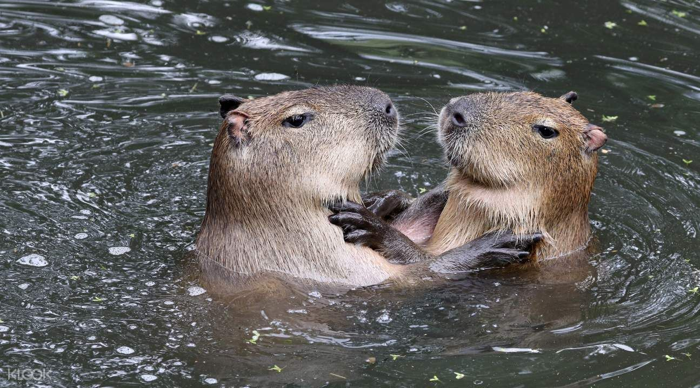
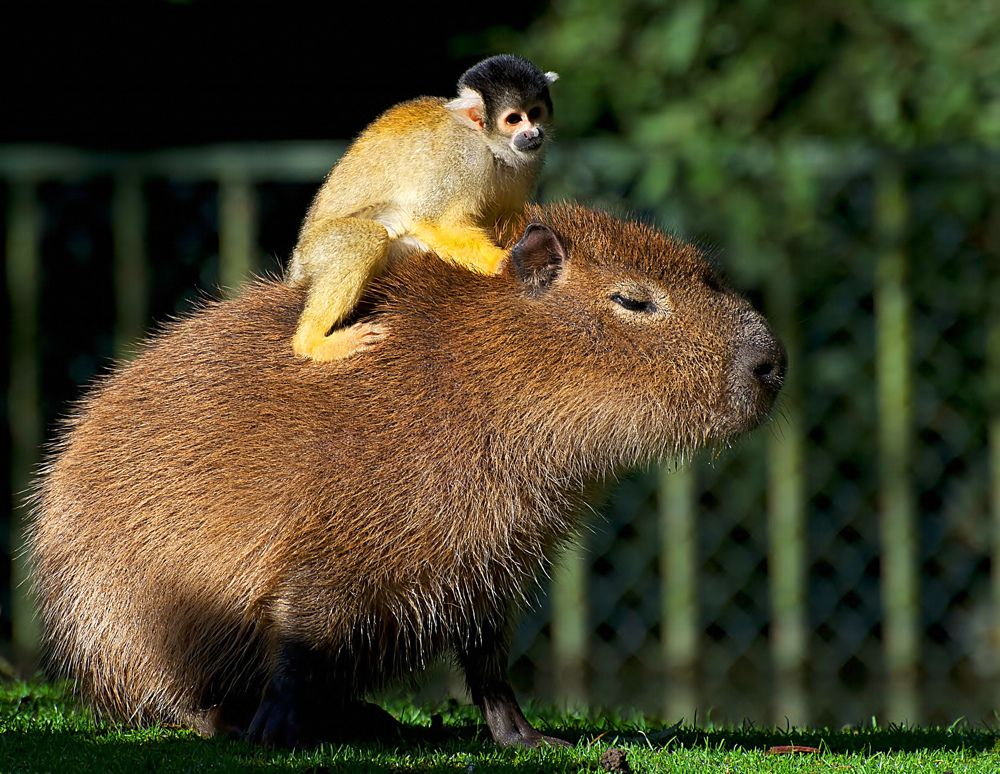
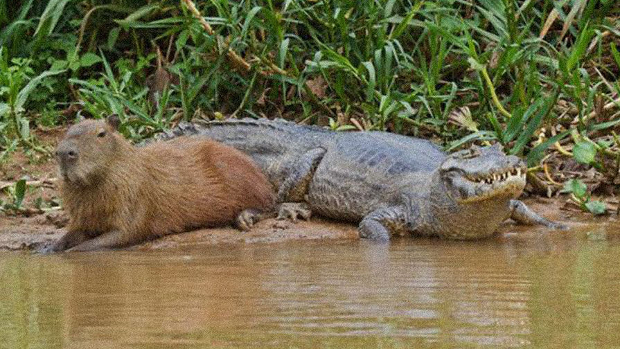
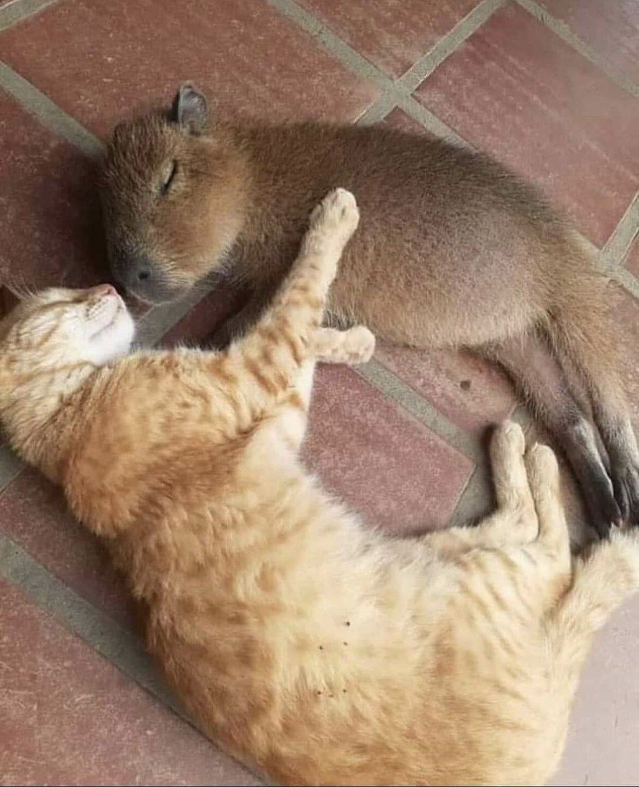

Капибара живет рядом с водоемами,потому что на солнце они могут обгореть, поэтому в жаркие дни они любят плавать.
Капибара очень дружелюбное животное.В природе они живут стаями.Но часто с ними можно встретить разных животных. На суше к ним подходят обезьянки и поедают паразитов с шерсти. 
А также к ним на спины садятся птицы,чтобы просто посидеть и посмотреть вокруг.

Но также их можно встретить даже с крокодилами. 
Капибару встречают и с обычными пушистыми домашними зверьками.
" 
Вообщем,как вы поняли,они очень милые животные и дружат со всеми другими обитателями.